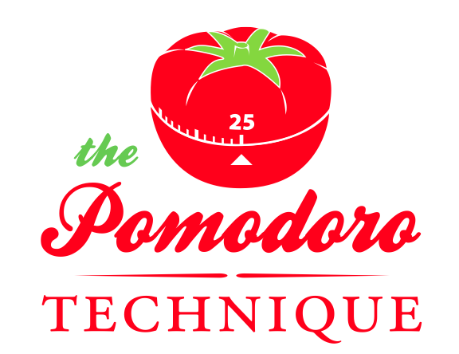
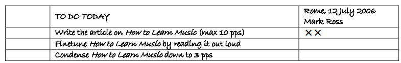
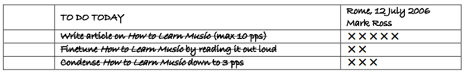
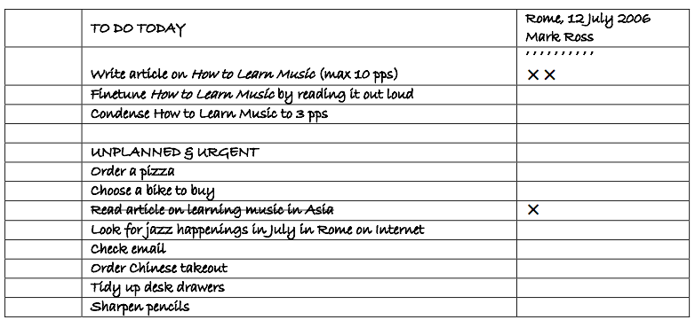
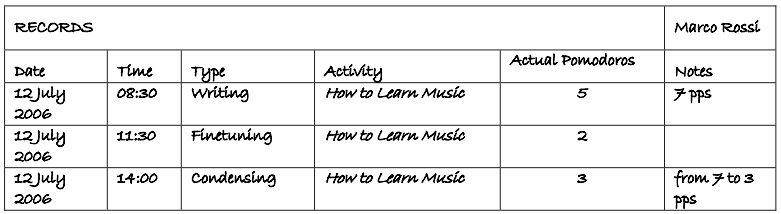

Sesión 10: Aplicación Pomodoro
Ejercicio: aplicación pomodoro

Diseñar y desarrollar una pequeña aplicación con la que podamos utilizar la técnica del Pomodoro:
- Define una tarea que quieras cumplir
- Pon el pomodoro (temporizador) a 25 mininutos
- Trabaja en la tarea hasta que se cumplen los 25 minutos. Cuando termines, anótalo.
- Tómate un pequeño descanso (5 minutos)
- Cada 4 pomodoros toma un descanso algo más largo
Tenemos una lista de tareas por hacer en las que vamos anotando los pomodoros:

Tachamos las tareas cuando las terminamos:

Anotamos las tareas que se nos ocurren:

Al final del día guardamos la lista de tareas realizadas:

Nota
Para controlar el tiempo del pomodoro podemos utilizar el componente Timer